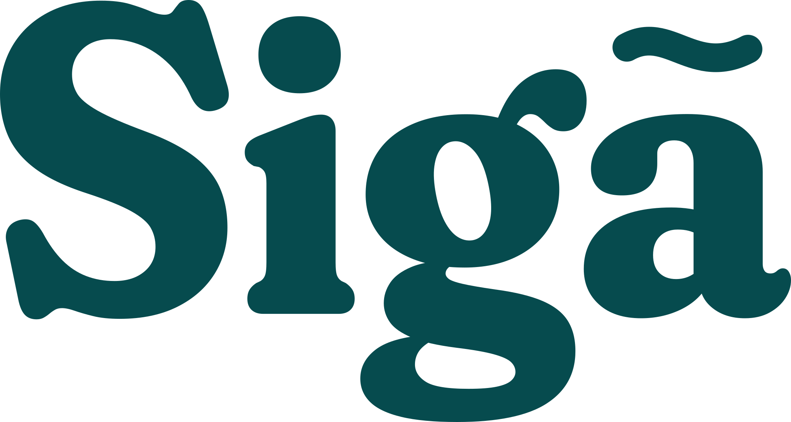

Keep your music on.
Your music softens while you dictate, then gently comes back.
Get SigáApple Silicon · macOS 14.2+
We all need
a little quiet.
Choose how quiet you like it. Sigá lowers the volume while you dictate, then gently returns to your usual volume when you stop. Your music keeps playing.
Lives in your menu bar. No account. Open source.
Stay in your flow.
Keep listening while you get your thoughts down.
Release candidate 0.2 · Apple Silicon · macOS 14.2 or later.
Quietly practical.
Set your volume, choose launch at login, or take a break. It’s all in the menu bar.
What does it work with?
Choose Willow or superwhisper in setup. For any other dictation app, choose Use another app… and dictate once; Sigá adds the app it heard start and stop. An app that keeps the microphone on all the time can’t be followed. You’ll need an Apple Silicon Mac and macOS 14.2 or later. It has been tried on macOS 27; earlier versions still need hands-on verification.
Sigá uses your Mac’s volume controls. Some speakers, displays, and audio interfaces don’t let macOS change their volume, so Sigá can’t lower them. It also won’t change sound that an app sends to a different device.
Does it hear what I say?
No. Sigá only checks whether your dictation app’s microphone is on. Your audio and dictated words never pass through Sigá. The app makes no network requests.
What happens if I change the volume?
Sigá restores the level saved when dictation started, even if you adjust it while talking. Choose “Restore volume” to bring it back and keep it there until this recording ends.